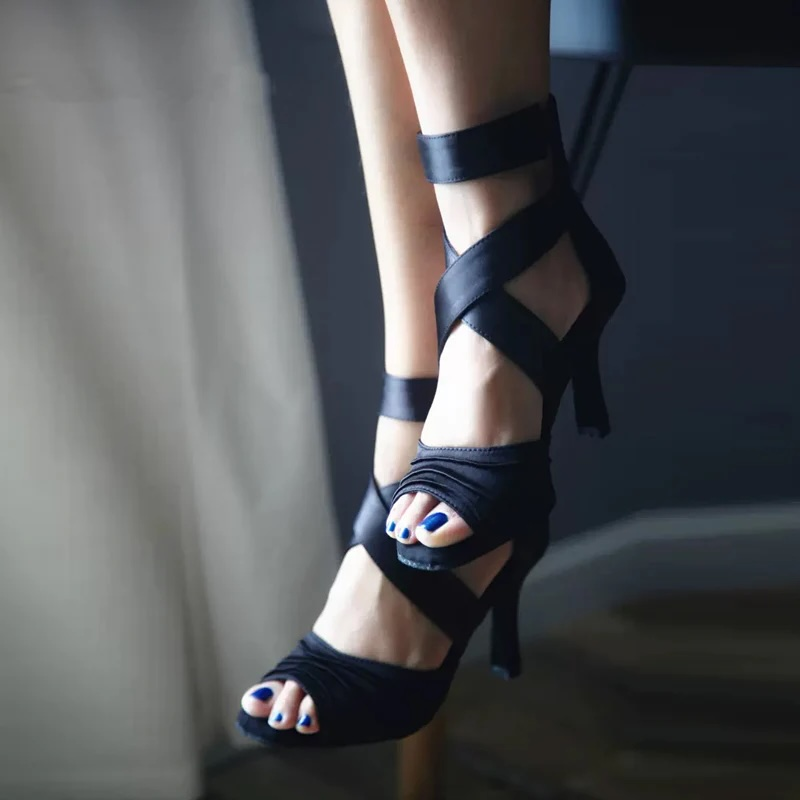

Olivia - Women's Latin Dance Shoes
$275 CAD
Black criss-cross dance shoes combine style and comfort, with their criss-cross straps adding both a fashionable look and extra support. These shoes are perfect for dancers wanting a sleek, classic design.
The adjustable ankle straps and stable heel provide a secure fit, giving dancers confidence during fast moves. The sturdy heel adds balance, making them a great choice for various dance styles.
Ideal for Latin, ballroom, and more, black criss-cross shoes offer both comfort and elegance. They let you move freely while showcasing your footwork with ease and style.